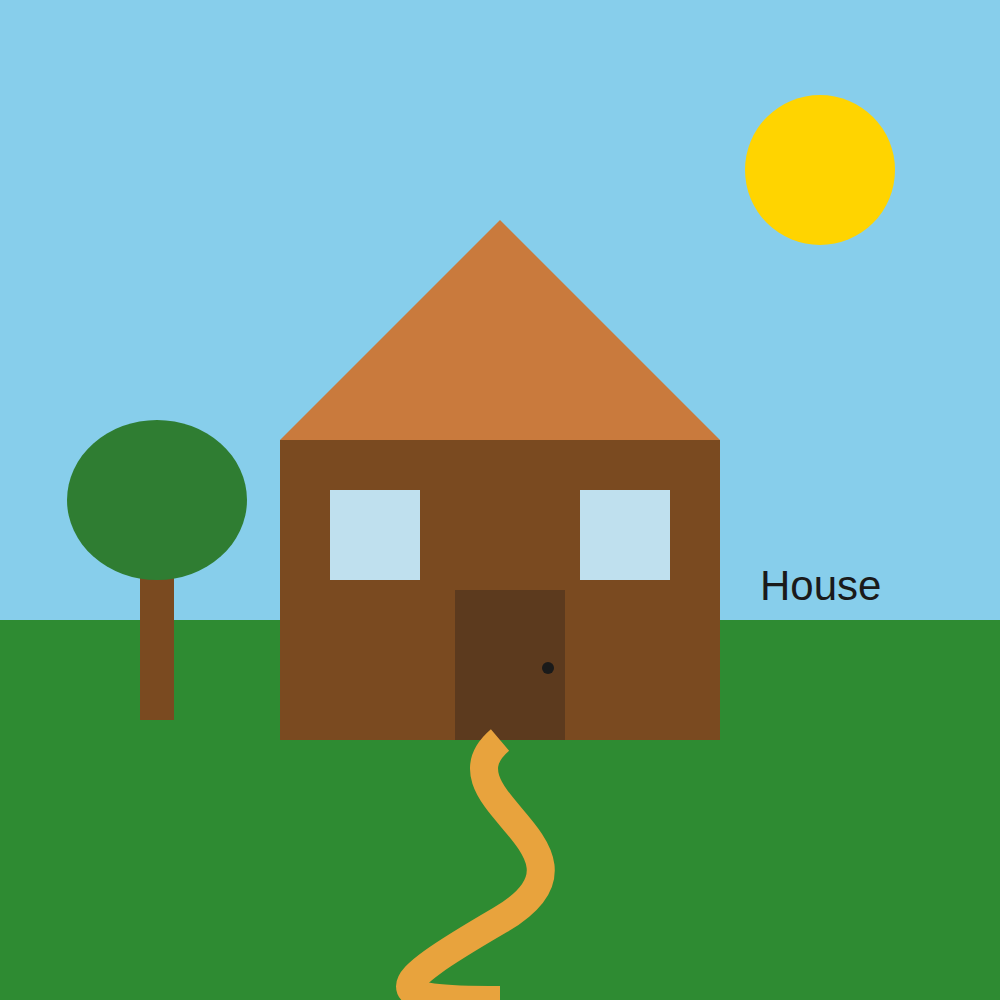
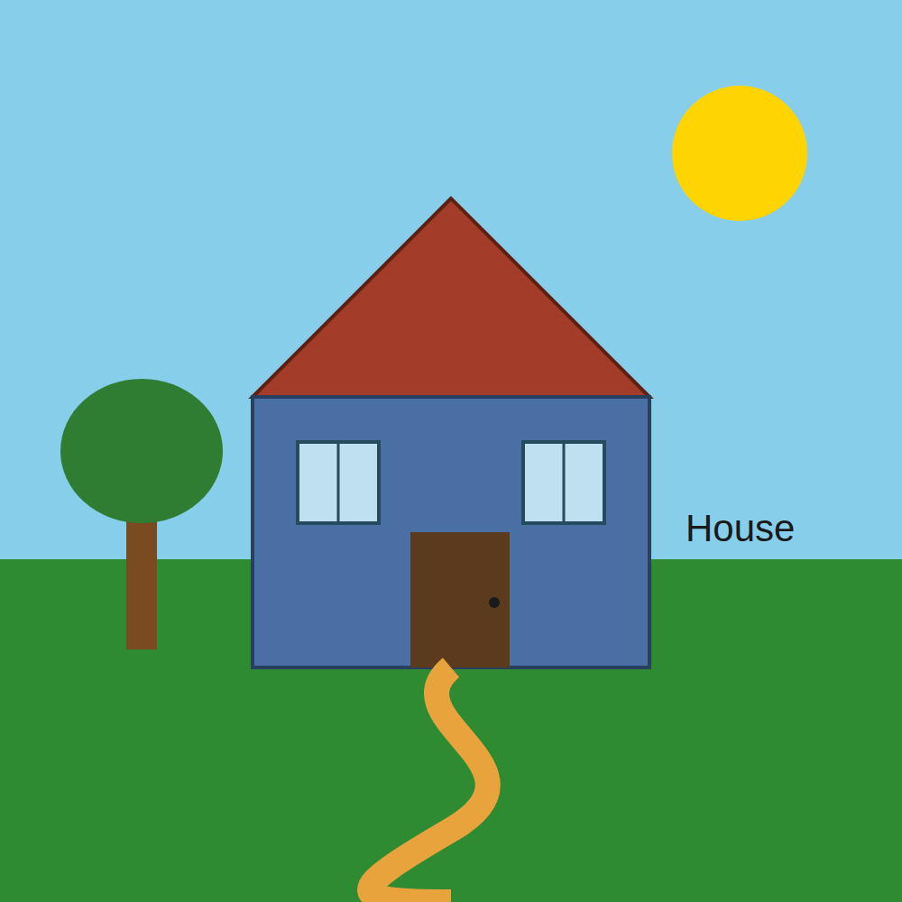
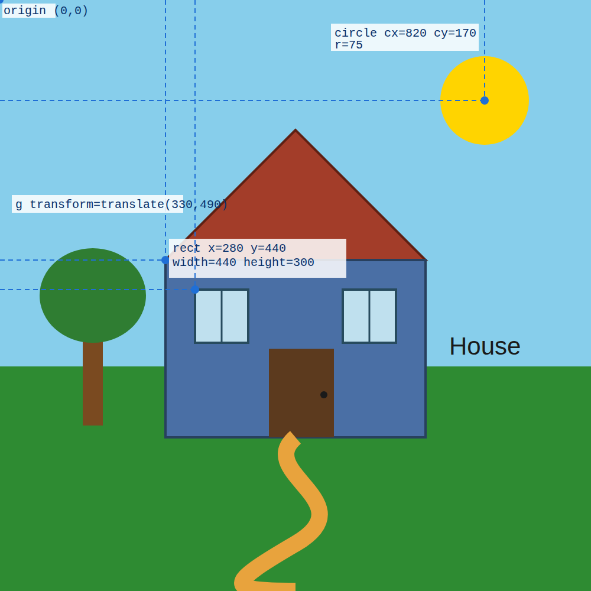

A house and garden built with SVG shapes: rect, circle, ellipse, polygon, path, line, text, and g/transform.
Step 1 was a plain first version. Step 3 changed the roof and house body colours and added strokes to them. Step 4 replaced the two separate window rectangles with grouped, transformed, identically-styled windows.


| Element | Before (Step 1) | After (Step 3–4) |
|---|---|---|
| Roof | fill="#c97a3d", no stroke |
fill="#a33d29", added stroke="#5e2013" stroke-width="4" |
| House body | fill="#7a4a20", no stroke |
fill="#4a6fa5", added stroke="#28405e" stroke-width="4" |
| Windows | Two separate <rect> elements (#window1, #window2), plain fill, no mullion |
Two <g class="window"> groups positioned with transform="translate(x,y)", sharing one CSS rule, each with a mullion <line> added |
Screenshot annotated with dashed guide lines back to the origin (0,0), in the style of Figure 1.12 (Dufour & Meeks, 2024), for three sample shapes.

Generative AI (Claude, Anthropic) was used to draft the initial SVG house (Step 1). The customisation (Step 3–4: new colours, added strokes, and the grouped/transformed windows) was then made directly in the SVG markup.